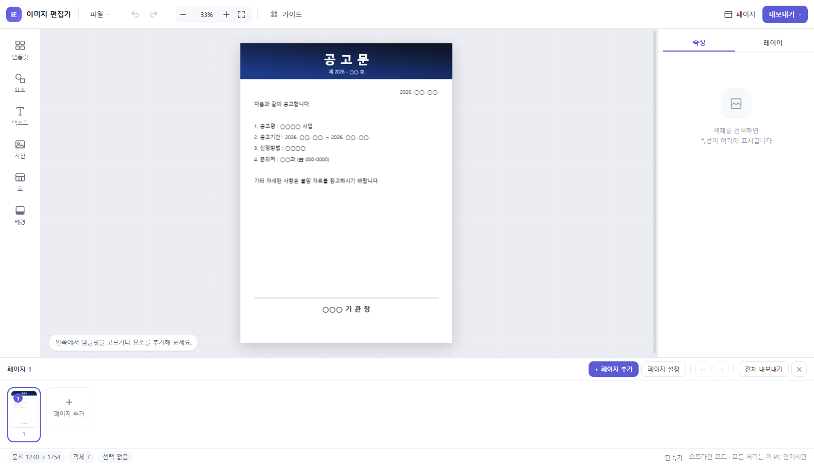
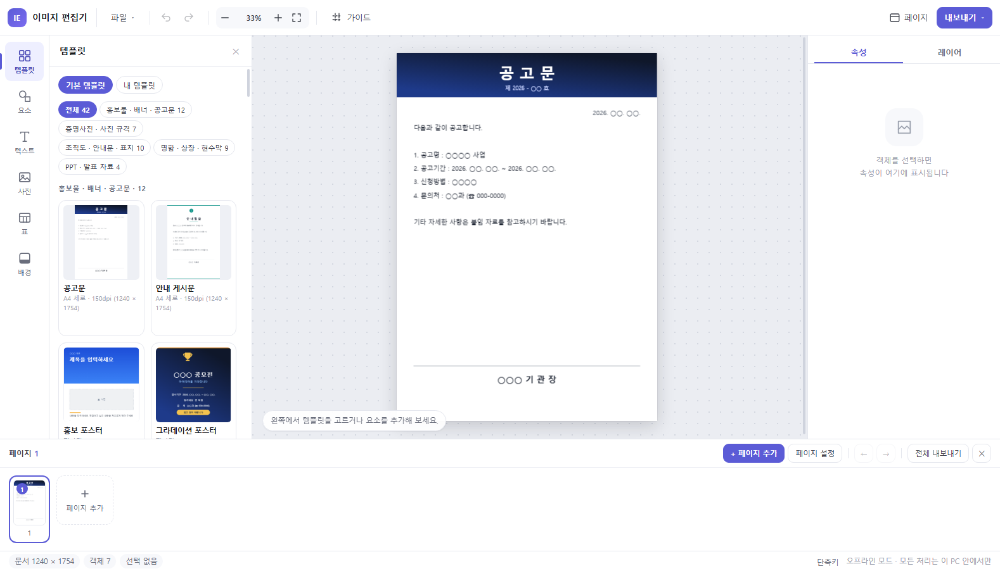
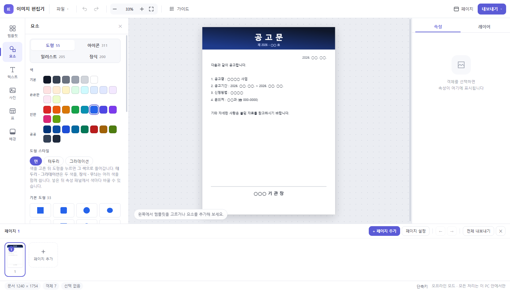
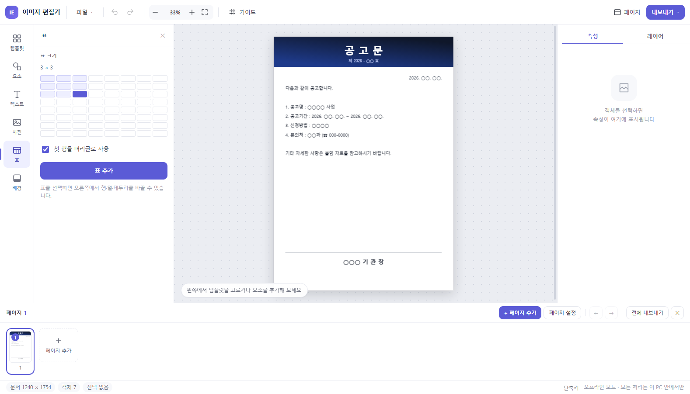
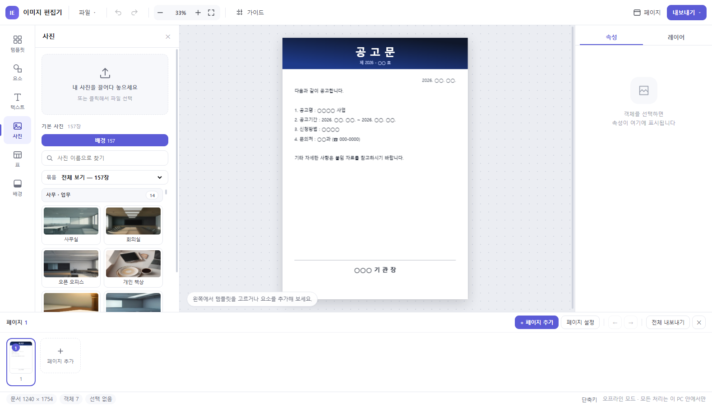
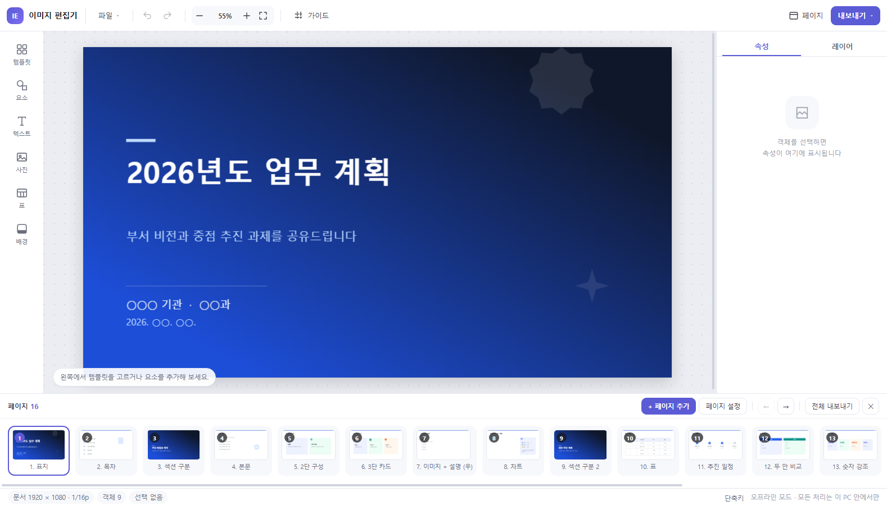

병무청 AI 아이디어·혁신과제 공모대회 (혁신과제 분야)
| 과 제 명 |
폐쇄 행정망 전용 온디바이스 시각화 솔루션 「안심 디자인」 개발 - 개인정보 자동 마스킹과 100% 저작권 프리 에셋을 결합한 공공 안심 시각화 체계 - |
|||||||||||||||
|---|---|---|---|---|---|---|---|---|---|---|---|---|---|---|---|---|
| 제안 배경 및 필요성 |
□ 공공기관 폰트·이미지 저작권 침해(내용증명 및 합의금) 리스크 상존
○ 실무자가 무료로 오인한 비인가 폰트·인터넷 이미지 무단 사용으로 저작권 침해 경고장 수신 및 분쟁 빈발
○ 공무원의 법적 준수 의무에도 불구하고, 안전하게 쓸 수 있는 공인된 디자인 리소스 부족
□ 행정망 보안 환경에 따른 디자인 도구 부재 및 개인정보 유출 위험
○ 망분리 규제로 민간 웹 그래픽 플랫폼 접속이 원천 차단되어 현업 부서 자체 제작 환경 부재
○ 홍보물 배포 시 사진 속 민원인 얼굴이나 담당자 개인 연락처 노출 등 개인정보 유출 사고 위험 상존
□ 저작권·개인정보 보안을 원스톱 해결하는 무설치 자체 솔루션 절실
○ 외부 통신 0회의 안전한 환경에서 100% 저작권 프리 리소스를 제공하고 보안을 사전 검증하는 공공 도구 요구
○ 업무망 'AI 워크메이트'의 단순 업무 내용 검색 결과와 유기적으로 연계 가능한 표준 서식 체계 필요
|
|||||||||||||||
| 연구분야 | 고객지원 / 정보기획 / 행정혁신 (업무효율화 및 대국민 소통) | |||||||||||||||
| 소속기관 | ||||||||||||||||
| 대표직원 (1인) | ||||||||||||||||
| 참여인원 | ||||||||||||||||
| 과제 개요 및 추진내용 | ||||||||||||||||
| 워크메이트 활용 가점 5점 |
□ [업무 내용 연계] 병무 업무 핵심 요약 활용
○ 내부 RAG(AI 워크메이트)로 병역판정·모집·복무 관련 단순 업무 내용 및 필수 안내 사항 검색
○ 요약된 공식 안내 문구를 「안심 디자인」 서식에 즉시 적용하여 내용 누락 및 오류 방지
□ [다빈도 문의 분석] 취약 안내 분야 발굴 및 서식화
○ 질의응답 이력을 확인하여 병역의무자 문의가 집중되는 정보 취약 영역 식별
○ 해당 분야를 「안심 디자인」 우선 제작 템플릿으로 지정하여 대국민 안내 강화
|
|||||||||||||||
| 활용 모델 |
□ 생성형 AI (Gemini 1.5 Pro) & 구글 플로우
○ 프롬프트 엔지니어링을 통한 온디바이스 얼굴 인식 및 개인정보 정규식 탐지 알고리즘 구현
□ 병무청 내부 AI 워크메이트
○ 단순 업무 내용 요약 검색 및 공문서 작성 내용 사전 검토
|
|||||||||||||||
| 구현 방법 |
□ 저작권 안심 100% 저작권 프리 에셋 생태계 및 외부자료 안심 고지
○ [공공 안심글꼴 전수 탑재] 문체부 안심글꼴 및 오픈소스(SIL OFL) 표준 서체(Pretendard, Noto Sans, 검은고딕 등)만 선별 내장하여 폰트 저작권 분쟁 원천 차단
○ [공공누리 제1유형 에셋] 95종 템플릿, 311종 벡터 아이콘, 162장 사진 전수 공공 라이선스 검증 완료
○ [외부 자료 안심 고지] 외부 이미지 파일 업로드 시 "저작권·초상권에 문제없는 공공/자체 자료만 사용" 안내 팝업을 상시 표출하여 공무원의 법적 준수 의무 환기
□ 보안 특화 온디바이스 개인정보 안심 검증 엔진 탑재
○ [시각 분석] 브라우저 내장 컴퓨터 비전(Pico AI) 기반 사진 속 인물 얼굴 자동 탐지 ➔ 원클릭 자동 블러/모자이크
○ [텍스트 검증] 문서 내 주민등록번호, 휴대전화 번호(010-XXXX-XXXX), 군번 등 민감 정보 패턴 자동 탐지 ➔ 마스킹(010-****-1234) 권고
○ [원클릭 검증] 작업 완료 후 상단 [🛡️ 개인정보 검증] 버튼 클릭으로 유출 위험 전수 진단 및 안심 배지 부여 후 배포
□ 사용자 편의 행정 규격 선택 마법사 (원클릭 캔버스 생성)
○ 새 문서 실행 시 작업 용도(현수막/배너, 포스터, 카드뉴스, 공문서, PPT, 증명사진)를 묻는 규격 팝업 제공
○ 배너(2400×800), 포스터(A4/A3), SNS 카드뉴스(1080×1080), 발표자료(1920×1080), 증명사진(3.5×4.5cm) 등 정형화된 표준 규격 즉시 세팅
 ▲ [화면 1] 「안심 디자인」 메인 에디터 및 작업 캔버스
□ 병무행정 표준 95종 템플릿 라이브러리
○ 행정 서식 29종: 기안문, 시행문, 협조전, 출장명령, 지출품의, 감사보고 등
○ 대국민 안내 32종: 공고문, 포스터, 카드뉴스, 행사 배너 등
○ 발표자료 14세트(152슬라이드): 표지·목차·본문·결론 완결형 덱 자동 생성
○ 증명사진 규격 7종: 여권, 주민등록, 공무원증(3.5×4.5cm) 등 표준 세팅
 ▲ [화면 2] 95종 실무 템플릿 라이브러리
□ 스마트 표 편집기 및 그래픽 에셋
○ 표 도구: 셀 병합·분할, 테두리 및 배경색 지정, 행·열 편집
○ 그래픽 자산: 55종 도형, 311종 공공 아이콘, 162장 기본 사진, 1,677만 색상 피커 연동
 ▲ [화면 3] 벡터 아이콘 및 도형 패널
 ▲ [화면 4] 스마트 표 편집 패널
□ 오프라인 이미지 보정 및 포맷 변환 엔진
○ 배경 분리(매직툴), 머리카락 알파 매팅, 8종 인물 프리셋, 윤곽 교정(리퀴파이) 탑재
○ 순수 오프라인 브라우저 변환으로 PPTX 및 HWPX 파일 직접 생성·내보내기
 ▲ [화면 5] 사진 라이브러리 및 보정 툴
 ▲ [화면 6] 16:9 발표자료(PPT 덱) 저작
|
|||||||||||||||
| 데이터활용 |
□ 공공 저작물 및 통계 자료 활용
○ 공공누리 제1유형 저작물 및 열린데이터 광장 통계 연동
□ 로컬 메모리 처리로 정보 유출 원천 차단
○ 모든 작업 데이터(얼굴 사진, 텍스트)는 PC RAM 내에서만 임시 처리 후 창 종료 시 자동 소멸
○ 외부 전송 경로가 없어 개인정보 유출 위험 완전 배제
|
|||||||||||||||
| 세부 개선 내용 |
|
|||||||||||||||
| 기대 효과 및 추후 확산 계획 |
□ 정량적 효과
○ 법적 분쟁 제로화: 폰트·이미지 저작권 침해 분쟁 및 내용증명 발생률 0건 달성
○ 개인정보 유출 차단: 홍보물 개인정보(얼굴·연락처) 노출 사고 발생률 0건 달성
○ 비용 절감: 외주 용역비 및 상용 프로그램 라이선스 구매 예산 절약
○ 시간 단축: 안내문 제작 4시간 ➔ 20분, 발표자료 12시간 ➔ 1시간
□ 정성적 효과
○ 공공 컴플라이언스 준수: 공무원의 저작권법 및 개인정보보호법 준수 의무를 시스템적으로 완벽 지원
○ 행정 신뢰도 향상: 안전한 공공 에셋과 고품질 인포그래픽 제공으로 대국민 행정 신뢰도 제고
□ 단계별 확산 계획
○ 1단계(시범 운영): 본청 주요 부서 실무 적용 및 저작권·개인정보 안심 검증 실증
○ 2단계(전국 확산): 14개 지방병무청 배포로 시각 디자인 및 보안 검증 체계 일원화
○ 3단계(대외 전파): 공공기관용 안심 템플릿 패키지로 타 부처 공유
|
|||||||||||||||